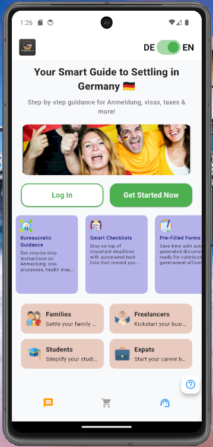
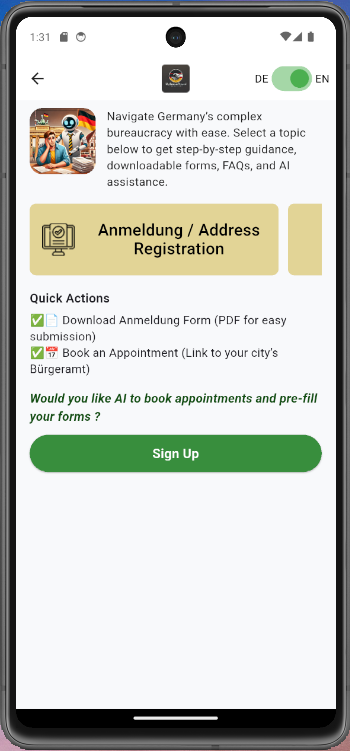

AI Expat Workflow Assistant
A guided product experience for navigating life-admin workflows in Germany.
Problem → Bureaucracy, language barriers, scattered information
Solution → Guided workflows + AI assistance
Build → Flutter UI · TypeScript web · FastAPI backend
Case Study 01
AI-powered workflow system for expats relocating to Germany
This case study focuses on simplifying complex administrative journeys through guided workflows, document understanding, reminders, and contextual AI support.
Phase 1: Core development in progressTarget UsersExpats, students, skilled workers, families relocating to Germany
Core ProblemBureaucracy, housing, job search confusion, language barriers
Product ScopeGuided workflows, AI assistance, reminders, document support
StatusUI, workflows, and backend under active development
ObjectiveBecome the go-to digital platform for expats moving to Germany
Growth Targets50K users (12 months), 60% retention (6 months)
Automation GoalAutomate 5+ key processes with 90% satisfaction
Business Goal10% conversion + strategic partnerships
Decision Framework: Product Vision Canvas guided all decisions across target users, needs, product scope, and business goals. Every feature was validated against real expat pain points such as bureaucracy, housing, job search, and integration challenges.
FlutterTypeScriptFastAPIPythonFirebaseOCR
1. Product Screens — execution proof
Use 2–4 screenshots here to show that the idea has moved beyond theory into a real product flow.

Landing / value proposition screen
Guided bureaucracy workflow2. Product Strategy — PM proof
I used the Product Vision Canvas and OKRs to define scope, prioritize MVP features, and connect user pain points to measurable outcomes.
North Star KPI
Daily Active Users
Driven by completed workflows, successful onboarding, repeat sessions, and guide completions.
Objective 1 — AdoptionBecome the go-to digital platform for expats moving to Germany. Target: 50K active users in 12 months; 60% retention after 6 months.
Objective 2 — AutomationStreamline bureaucracy by automating 5+ key processes such as Anmeldung, residence permit, and tax registration.
Objective 3 — User ExperienceDeliver personalized recommendations for bureaucracy, housing, and jobs with 80% relevant content after onboarding.
Objective 4 — Business GrowthConvert 10% of free users to paid plans and secure strategic partnerships with relocation agencies and language schools.
Target Audience
Primary UsersExpats, international students, skilled workers, and families relocating to Germany.
Secondary UsersHR teams, relocation agencies, and employers supporting international hires.
Pain PointsBureaucracy, housing barriers, job search uncertainty, healthcare, finances, and social isolation.
User NeedStep-by-step guidance, personalization, clarity, and a sense of belonging.
Key product decision: Prioritized guided workflows over full automation in the MVP to build user trust, reduce confusion, and keep the product feasible during Phase 1.